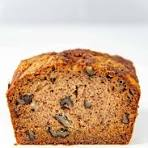

Banana Bread

Description:
This moist and flavorful banana bread is a perfect way to use up ripe bananas. Enjoy it as a breakfast treat or a delicious snack any time of the day.
Ingredients:
- 3 ripe bananas, mashed
- 1/2 cup unsalted butter, melted
- 1 teaspoon vanilla extract
- 1 cup granulated sugar
- 1 1/2 cups all-purpose flour
- 1 teaspoon baking soda
- 1/2 teaspoon salt
- 1/2 cup chopped nuts (optional)
Steps:
- Preheat the oven to 350°F (175°C). Grease a 9x5-inch loaf pan.
- In a mixing bowl, combine mashed bananas, melted butter, and vanilla extract.
- In a separate bowl, whisk together sugar, flour, baking soda, and salt.
- Add the dry ingredients to the banana mixture and stir until just combined. Fold in chopped nuts if using.
- Pour the batter into the prepared loaf pan and bake for 60-65 minutes or until a toothpick inserted comes out clean.
- Allow the banana bread to cool in the pan for 10 minutes before transferring it to a wire rack to cool completely.
- Slice and enjoy your homemade banana bread!